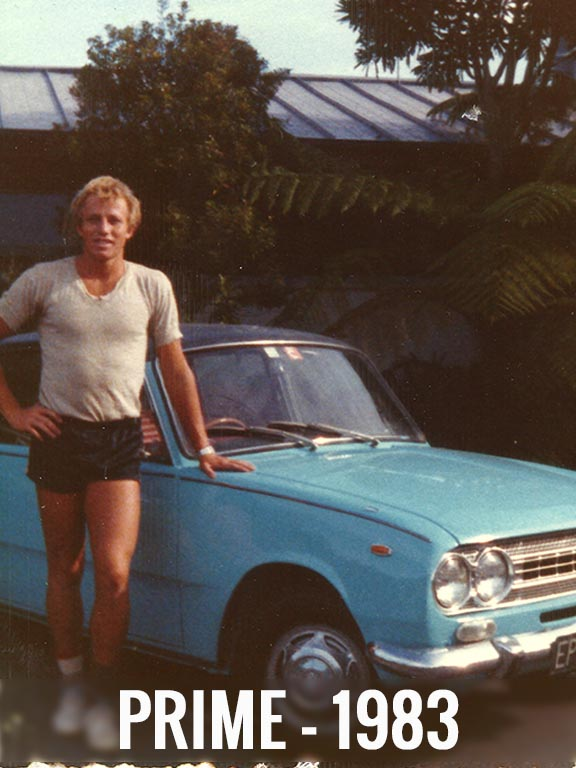
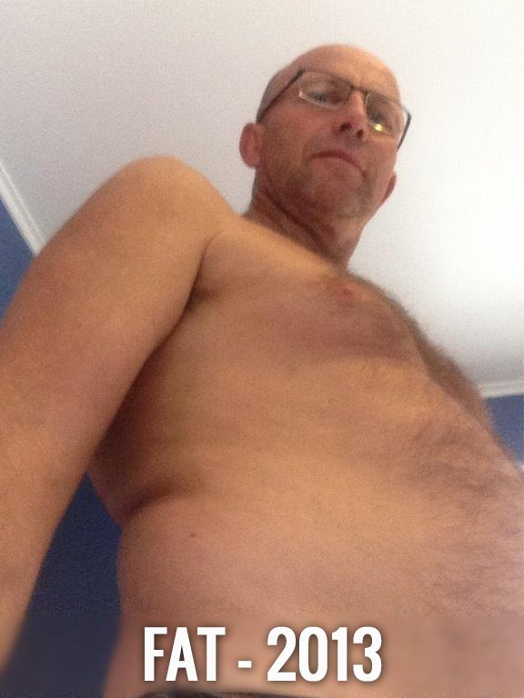

“Live Free of Fat Forever”
Three months and three primal steps to achieve permanent life changing weight-loss.
Book a call:
The primal man weight-loss program is a unique three month three step program exclusively for men over 40.
I created the program after achieving permanent life changing weight-loss three years ago.
The core pillars of the program are primal eating, personal choice and powerful change techniques.
Step one (5 weeks) you STOP burning sugar and start burning fat, step two you gut’s it out and DROP a life changing amount of fat
and step three you LOCK in your weight loss and design your lifestyle to live free of fat forever.
Watch Video Here! Click Me!
My Primal Weight Loss Story
I’m Rob, a 54 yr old Kiwi male with four outrageously awesome kids. I help people to live free of pain and suffering, any way I can. Primal Life Force is a space to spark and support life change - where people go from “I can’t” to “I can”. Below shows my journey from young and fit playing rugby in France to feeling fat and useless at 50. Then finally to feeling fantastic fit and healthy at 55.
|  |  |  |
Client Testimonials
Garry from Calgary, Canada
"I've struggled with weight gain for 20 years. What stuck with me was that I lost 18 pounds in 3 months by simply "going Primal".
I ate great food (and lots of it) but I just ate different food and changed how I built in exercise.
It wasn't complicated.
The other enormous benefit was that symptoms related to heart/burn gastric reflux, which were to be addressed through surgery,
disappeared in less than a month and after 2 years of going primal, they haven't reappeared.”
- Garry
Tama from Melbourne, Australia
“Working with Rob I feel so much more empowered in my relationship with food.
I now eat consciously, and really enjoy great food. I am getting my body back and am loving looking in the mirror again.
I value honouring my body, and being more able. Rob helped me to create the space for me to move quickly towards being healthy.
Thank you Rob, because of you I am half the man I was.”
- Tama